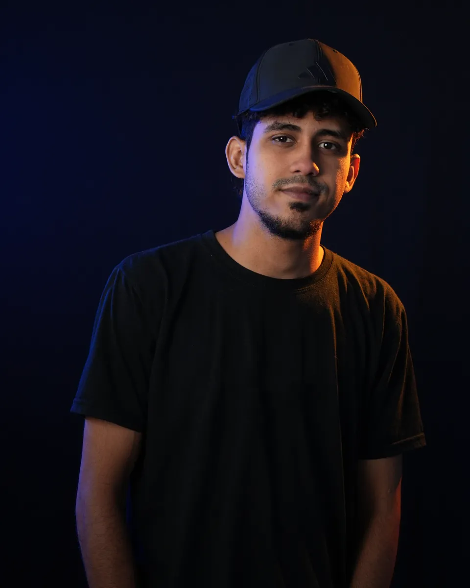

Material en camino
Productor Audiovisual
Especialidades audiovisuales & publicidad (IUTA)
Creative Producer · Coordinador de producciónOperador de cámaraAsistente de cámaraEditor de video
Transformando ideas de marca en experiencias audiovisuales de alto impacto.
Maracay, Venezuela · Disponible para viajar dentro y fuera del país
Coordinador Audiovisual & Publicista (IUTA)
Planificación de rodajes, liderazgo de equipos técnicos en set, Diplomado en Meta Ads y Community Manager Pro.
Operador de Cámara & Asistente de Cámara
Operación directa de cámaras Cinema y Mirrorless, asistencia de cámara: ópticas, foco, gimbals Ronin, iluminación y audio en locación.
Editor de Video Comercial & Reels
Edición profesional en Adobe Premiere Pro y CapCut: spots de lanzamiento, aftermovies, corrección de color y piezas de alto impacto.
Producción, cámara y coordinación para marcas de movilidad, belleza, alimentos y eventos.
Catálogo de videos producidos (5) · canal oficial de Bera Motorcycles
Pieza audiovisual producida por Bramdon Aguilar para Bera Motorcycles.
Ver en YouTube ↗Toca un proyecto para ver sus fotos y videos. En computadora, pasa el mouse para ver un adelanto.
Material en camino: se publica apenas esté listo.

Formación en mercadeo, coordinación logística en set y ejecución de video comercial.
Técnico Superior Universitario en Publicidad y Mercadeo, egresado del IUTA sede Maracay. Coordinador de producción audiovisual con experiencia en agencia 360 (Musa Business & Marketing), liderando al equipo de producción para convertir las estrategias de marca de los socios en contenido real para feed, reels, tendencias, lanzamientos y coberturas corporativas.
Su día a día en Musa: distribuye las tareas al equipo técnico durante toda la semana, decide la asignación de pautas, determina qué cámaras y ópticas usar, calcula cuántos videos se pueden rodar y supervisa la edición y la entrega final.
IUTA sede Maracay · Instituto Universitario de Tecnología de Administración Industrial
Base metodológica en comunicación persuasiva, investigación de audiencias, planificación de medios y gestión estratégica de marcas.
En una agencia 360, la clave es la viabilidad operativa: los socios diseñan la estrategia con el cliente y el coordinador de producción organiza los recursos reales, define quién va a cada pauta, asigna las cámaras y calcula con exactitud cuántos videos se pueden grabar para garantizar calidad y entrega a tiempo.
Cómo trabaja Bramdon en producción
Agosto 2025 – Septiembre 2026
Coordinador de Producción Audiovisual
Agencia 360 de marketing, reels y producción para marcas.
Entró como operador de cámara y editor. Por su criterio en set, su organización y su resolución operativa, fue promovido a coordinador y quedó a cargo del equipo técnico durante toda la semana.
Rodajes comerciales, manejo de cámaras, estabilizadores e iluminación, y edición en Adobe Premiere Pro y CapCut. Su experiencia en set le permite comunicarse con cada operador con conocimiento técnico.
Gestiona al personal fijo de unas 6 personas entre camarógrafos y editores. Decide la asignación de pautas, los equipos de cámara por salida, el volumen de videos viables y el control de calidad de la entrega.
Los socios de Musa conciben las estrategias de marca, los objetivos comerciales y los acuerdos con los clientes.
Aterriza las ideas, calcula la viabilidad, decide quién va a cada pauta, asigna cámaras y coordina la grabación de cada pieza.
Camarógrafos y editores sacan adelante el contenido para feed, reels en tendencia y coberturas de eventos.
Liderazgo operativo del personal fijo durante toda la jornada, entre camarógrafos en calle y editores en base.
Decisión de quién asiste a cada grabación, qué equipo lleva cada operador y cuántos formatos se pueden rodar.
Las estrategias de los socios se convierten en contenido atractivo para feed, reels y coberturas.
Respuesta inmediata a imprevistos técnicos para que el material final cumpla el estándar de cada marca.
Contenido y producción para empresas de movilidad, belleza, moda, alimentos y retail, desde la agencia 360 Musa.
Movilidad y motos
Lanzamientos de motos, comerciales, campañas de concientización, coberturas de aniversarios y contenido para redes.
Sector automotriz
Contenido comercial, revelaciones de vehículos y piezas dinámicas para feed y reels.
Posventa y técnico
Piezas informativas de talleres, servicios y atención al cliente.
Repuestos y accesorios
Contenido comercial de catálogo de repuestos y accesorios originales.
Náutica y motores marinos
Lanzamiento de motores fuera de borda y rodaje dinámico en costa marina.
Motos de alta cilindrada
Rodajes comerciales y exhibición de motocicletas de alta cilindrada para redes.
Motos deportivas
Contenido comercial y piezas de exhibición de motos de alta gama para redes.
Movilidad y vehículos todoterreno
Lanzamiento de la Snarler AT10 y creación de contenido de producto.
Cosmética y belleza
Lanzamiento de línea de esmaltes, comerciales y cobertura oficial del evento junto a Miss Venezuela.
Eventos y moda
Producción audiovisual de colaboración comercial, pasarela y entrevistas en backstage.
Arquitectura y diseño
Recorridos de proyectos y piezas visuales para empresa de arquitectura.
Embutidos y jamones
Producción comercial, tomas de producto y piezas promocionales.
Alimentos y huevos
Piezas publicitarias de marca y material para redes sociales.
Retail y ferretería
Spots comerciales, coberturas de inauguraciones y piezas promocionales.
Moda y calzado
Contenido visual de producto, reels dinámicos y cápsulas promocionales.
Belleza y estética
Contenido audiovisual de productos de belleza y piezas de valor para redes.
Las que uso a diario, de la edición a la planificación.
Creative Producer
Disponible para proyectos audiovisuales y oportunidades profesionales, en Venezuela y en el exterior.